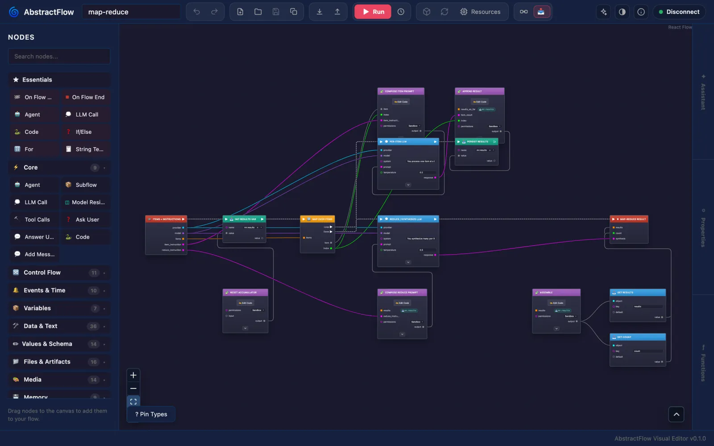
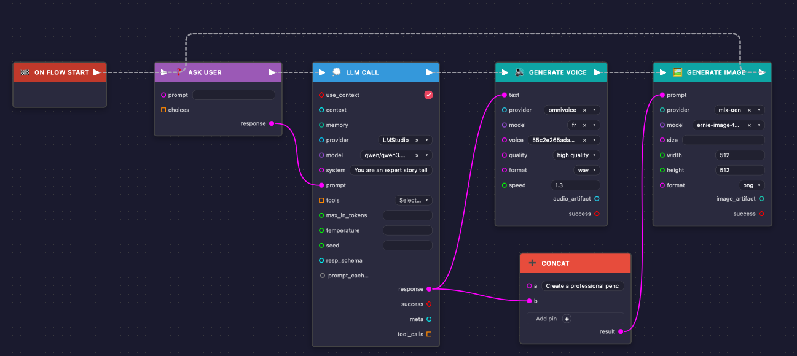
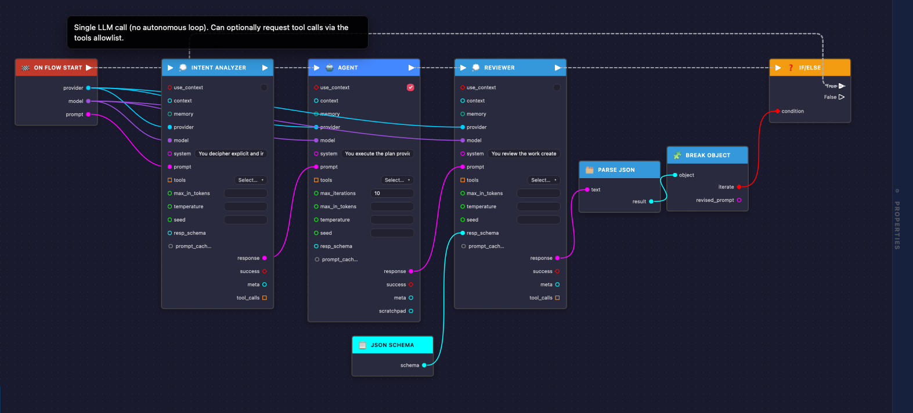
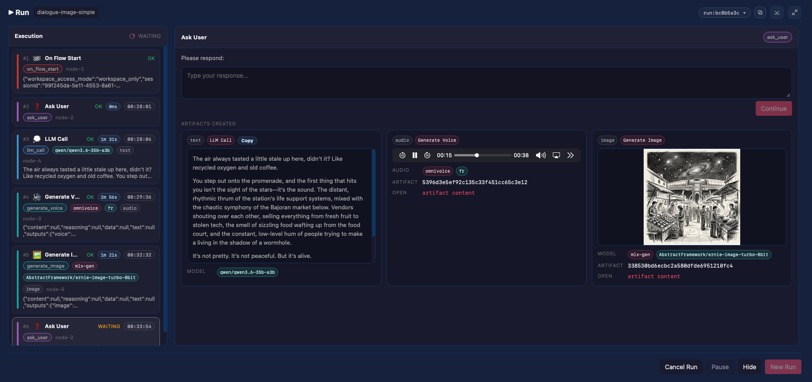

AbstractFlow
AbstractFlow is the visual workflow editor for AbstractFramework. You build a workflow in your browser by wiring LLM, agent, media, file and memory nodes, then save, publish and run it on your AbstractGateway, which stores it and runs it. AbstractFlow is a web app (@abstractframework/flow): a browser editor plus a small Node server that forwards /api/* to the gateway. The gateway's console installs and opens it from its Apps page (Install).
# Gateway console: Apps > Flow Editor > Open
# (served at /apps/flow/, already signed in)
# Or on its own: http://127.0.0.1:3003/
npx @abstractframework/flow \
--gateway-url http://127.0.0.1:8080Author in the browser, run on the gateway
The editor authors workflows; AbstractGateway and AbstractRuntime do everything else: users and sessions, provider configuration, workflow storage, compilation, execution, run ledgers (the record of every step), artifacts and media catalogs.
A web app
Open it from the gateway console, or start it with npx. There is nothing to install in Python: AbstractFlow ships no Python package and no local execution host.
Portable workflows
Workflows are VisualFlow JSON documents. Publishing packs them into .flow workflow bundles (a workflow, its subflows and metadata in one file) that any gateway can serve. Leave model pickers on Auto (Gateway default) and the gateway's defaults choose the model at run time.
Runs for every client
A workflow can declare the interfaces it implements, such as abstractcode.agent.v1, so AbstractCode and AbstractAssistant can run it as an agent.
Workflows you can read
Nodes, pins and wires show what a workflow does, and the Run view shows what each step produced.

/apps/flow/.


What you can build with
The palette groups nodes by family. Every media node runs through a capability the gateway advertises, and the editor shows a control only where the gateway supports it.
LLM Call and Agent
A Reasoning control (Auto, or off to xhigh for models that support it) and an MTP depth setting, both with a run-scoped override. Response schemas are built on the resp_schema pin, and a structured data output feeds Break Object, Switch and other object-aware nodes.
Control and data
If/Else, Switch, For, ForEach, While, Parallel and Sequence; Subflow for reusable pieces; array, string, object and JSON helpers; variables and math.
Code and expressions
Code nodes and small Python expressions on data input pins, sandboxed with RestrictedPython, plus a Functions drawer of named helpers a flow can share across its expressions.
Media
Generate Image, Edit Image, Restore / Upscale Image, Generate Video, Image To Video, Generate Voice, Generate Music, Transcribe Audio, Listen Voice and Analyze Media. Vision nodes take a batch count, ordered seeds and LoRA adapter stacks where the model supports them; artifact pins accept an upload right on the node.
Files and documents
Read File, Write File, Read PDF, Write PDF, Write DOCX and Write Chart, plus artifact import and export.
People, events and memory
Ask User and Answer User; On Flow Start and On Flow End; On Event, On Schedule, Wait Event and Delay, which wait inside a run that has already started; knowledge-graph and memory nodes (KG Assert, KG Query, Memorize, Recall).
From draft to a workflow everyone can run
Save and publish
The editor stores your workflow on the gateway (/api/gateway/visualflows/*). Publish packs it into a .flow bundle in the gateway's registry, where Observer, Code, the Assistant and your own apps can run it.
Automation Defaults
In the Flow Library, a runnable workflow's Automation row stores what an automation created from it starts with: the trigger (Schedule or Manual, listed by the gateway), its settings (a fixed UTC interval, no cron), Independent or Growing context, a title and default inputs. Publishing carries them into the bundle.
Run and watch
Run a workflow from the editor and follow each step, with previews of generated images, video and audio. You create and manage the automations themselves in AbstractObserver, AbstractAssistant or AbstractCode; see Automations.
Packing a bundle from Python
Outside the editor, AbstractRuntime packs a bundle from VisualFlow JSON files. Upload the result with POST /api/gateway/bundles/upload, or place it in the directory named by ABSTRACTGATEWAY_FLOWS_DIR.
from abstractruntime.workflow_bundle import pack_workflow_bundle
pack_workflow_bundle(
root_flow_json="/path/to/root.json",
out_path="/path/to/bundles/my-bundle@0.1.0.flow",
bundle_id="my-bundle",
bundle_version="0.1.0",
flows_dir="/path/to/flows",
)Open the editor
You need a running AbstractGateway (abstractgateway serve, or the installer).
# Gateway console: Apps > Flow Editor > Install, then Open
# or from a terminal:
abstractgateway apps install flow --launch
# The editor is at <gateway address>/apps/flow/ and opens signed innpx @abstractframework/flow --gateway-url http://127.0.0.1:8080 --port 3003
# or install the command
npm install -g @abstractframework/flow
abstractflow-editor --gateway-url http://127.0.0.1:8080
# open http://127.0.0.1:3003/ and sign in with a gateway user id and token| Flag | Meaning |
|---|---|
--gateway-url <url> | The gateway to talk to (aliases --gateway, --url). Without it: the saved login, then the gateway installed on this computer (~/.abstractframework/gateway.json), then http://127.0.0.1:8080. A gateway found this way is followed when it moves to another port. |
--port <n> | The port to listen on (default 3003). |
--host <addr> | The address to listen on (default 127.0.0.1). Use 0.0.0.0 only when other computers must reach this server directly; through the gateway no change is needed. |
Each browser signs in with a gateway user id and that user's token. The editor exchanges the token for a gateway session kept in HTTP-only cookies and does not keep the token. Serving at /apps/flow/ needs AbstractGateway 0.7.0 or later.